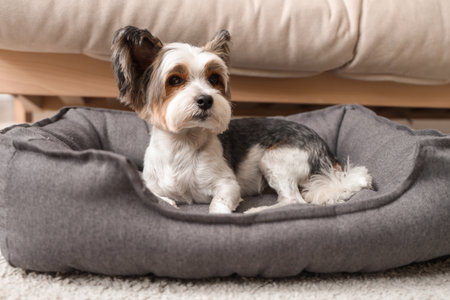
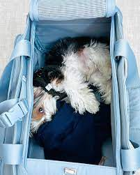
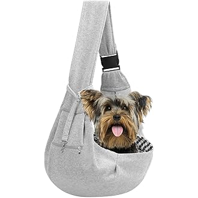

Beds, Carriers and Slings
Choosing the right bedding for a Biewer Yorkie is essential for their comfort, health, and quality of sleep. Since they are a small and delicate breed, a soft, supportive bed with plush padding helps protect their joints and provides warmth. Opting for a washable, hypoallergenic fabric is ideal, as Biewers can be prone to allergies and sensitive skin. A cozy, enclosed bed or a padded cushion in a quiet, draft-free area will make them feel safe and secure. Additionally, selecting the right size ensures they have enough space to stretch out comfortably without feeling lost in a too-large bed. Investing in quality bedding helps keep your Biewer Yorkie happy, well-rested, and healthy. 🐶💤
For sleeping or just hanging out
1. Beds
Like all dogs, Biewer Terriers need a place to sleep. A nice soft and fluffy bed is the perfect place for your pup to snooze. You can also put a blanket on the bed for maximum comfort. Adding a stuffed animal is optional if your pup loves haviing somthing to snuggle with.
2. Carriers
When you and your Biewer Terreir are on the go a carrier is the perfect thing to snooze in. Putting a blanket from home in it will help make the carrier feel familar to your pup. Adding a toy to the carrier will help your pup stay entertained for a while.
3. Slings
Biewer Terriers form bonds with their owners that are so strong that they want to be with you all the time, even when your busy. If your pup is like this then a sling might be the perfect solution. Not only can it hold your pup for you while you work but it also provides your pup a nice place to snooze close to the person they love most.